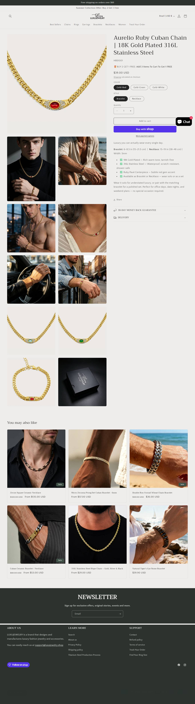

Fonte: coleção de best sellers pública da loja.
| # | Produto | Preço |
|---|---|---|
| 1 | Aurelio Ruby Cuban Chain | 18K Gold Plated 316L Stainless Steel | $39.00 |
| 2 | Premium Leather Bracelet For Men | $39.90 |
| 3 | Natural Tiger's Eye Stone Bracelet | $39.90 |
| 4 | Round Tiger's Eye Bracelet | $98.00 |
| 5 | Trendy Tiger's Eye Bracelet | $89.00 |
| 6 | Chunky Cuban Chain | Silver & Gold, 8mm & 12mm | $39.00 |
| 7 | Natural Agarwood Jade Bracelet | $199.00 |
| 8 | Romantic Agate Bracelet | $136.00 |
| Criativos únicos (amostra de 50 mais recentes) | 4 |
| Fator de duplicação | 12,5x (mesmo criativo repetido) |
| Anúncios por dia | 15.2/dia |
| Criativos únicos por semana | 8.5 |
| Janela da amostra | 3.29 dias |
| Mix de formato e sofisticação | Imagem estática de produto isolado (fundo branco/estúdio), copy mínima — o próprio nome do produto é o hook ("Premium Leather Bracelet For Men"). Sofisticação nível 1 (produção quase nula). |
Origem do tráfego: United States 100%.
1÷10,62% por construção (tautologia), não um achado.O que faz o campeão vender, decodificado dos criativos e do catálogo.
| Big idea / ângulo | Pedra natural (tiger's eye) e couro como marcador masculino discreto de status — "proteção/confiança" da pedra, sem apelo espiritual explícito. |
| Mecanismo único | Nome do produto = o próprio anúncio. Sem storytelling, sem urgência, sem gatilho de escassez — a oferta é o produto em si, testado em volume industrial. |
| Formato de hook | "Natural Tiger's Eye Bracelet For Men" e "Premium Leather Bracelet For Men" repetidos em dezenas de variações de imagem/público. |
| Estrutura do presell | PDP de catálogo padrão Shopify, foto de produto, sem página de vendas dedicada. |
| Objeção principal | "É pedra de verdade ou resina pintada?" — a palavra "Natural" no próprio título do anúncio responde a isso antes do clique. |
O que copiar de cada página desta loja, pra levar ao Plano de Ação da Vyprro.
| Home — o que modelar | Print da home ao lado (seção 03) + 🏬 abrir home ↗. Modele esta home: "Natural Tiger's Eye Bracelet For Men" e "Premium Leather Bracelet For Men" repetidos em dezenas de variações de imagem/público. |
| PDP — o que modelar | Print da PDP ao lado (seção 03) — 🛍️ abrir PDP do campeão ↗. PDP pra modelar: PDP de catálogo padrão Shopify, foto de produto, sem página de vendas dedicada. |
| Dado | Motivo | Método tentado |
|---|---|---|
| Contagem de reviews | widget não expõe aggregateRating no HTML ou loja não usa review pública | JSON-LD + Judge.me API |
| Eixo | Pontos | Por quê |
|---|---|---|
| Sourcing simples | 2/2 | pedra/couro/aço genérico, disponível em qualquer fornecedor de AliExpress |
| Ticket fecha sem escada | 1/2 | ticket baixo ($42 mediano) puxado por dezenas de SKUs de $29-49, precisa de bundle pra AOV subir |
| Criativo simples de produzir | 2/2 | foto de produto isolado, zero produção |
| Mecanismo com urgência | 0/2 | nenhum gatilho de urgência/escassez identificado nos criativos amostrados |
| Investimento de entrada baixo | 2/2 | catálogo simples, sem necessidade de tooling caro |
| Sem dependência de autoridade | 1/2 | volume de teste (212 ativos) sugere operação grande, não replicável no primeiro mês por quem está começando |
Nível é etiqueta de "pra quem serve", não nota de corte: 10-12 iniciante, 6-9 médio, 0-5 avançado. Toda oportunidade de dropshipping vale, muda só o perfil de operador.
Nome do produto = o próprio anúncio. Sem storytelling, sem urgência, sem gatilho de escassez — a oferta é o produto em si, testado em volume industrial.